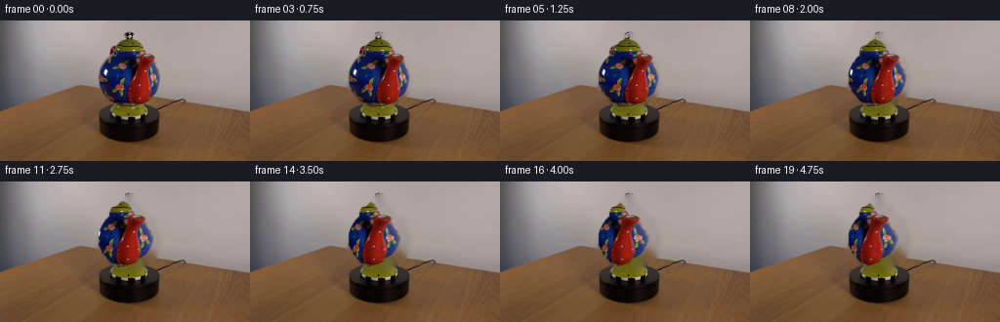
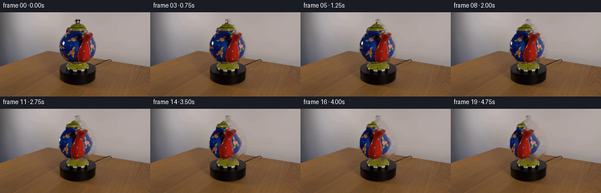
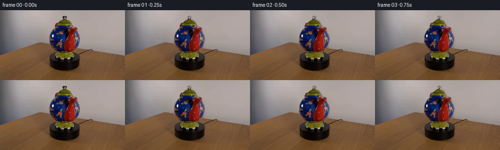

CODING AGENTS AS PIXEL WORLD MODELS
traex/DeepSeek-V4.1-Flash · 0177
点击播放 · 原生 RGB 像素
逐轮保存的候选
回放视频、检查图与代码变化。
每份候选均可单独播放。实际图片检查记录在下方工具轨迹中。
候选 01播放与检查图
点击播放 · 原生 RGB 像素

展开代码变化
--- 上一保存版本
+++ 本次保存版本
@@ -0,0 +1,233 @@
+from pathlib import Path
+
+import cv2
+import numpy as np
+
+import artifact_io
+
+
+CASE_DIR = Path(__file__).resolve().parent
+FRAME_COUNT = 20
+FPS = 4
+
+
+def _segment_teapot(frame):
+ """Build a soft matte around the compact teapot in the first frame."""
+ h, w = frame.shape[:2]
+ grabcut = np.zeros((h, w), np.uint8)
+ rect = (96, 14, 72, 77)
+ bg_model = np.zeros((1, 65), np.float64)
+ fg_model = np.zeros((1, 65), np.float64)
+ cv2.grabCut(
+ frame,
+ grabcut,
+ rect,
+ bg_model,
+ fg_model,
+ 9,
+ cv2.GC_INIT_WITH_RECT,
+ )
+
+ mask = np.where(
+ (grabcut == cv2.GC_FGD) | (grabcut == cv2.GC_PR_FGD), 255, 0
+ ).astype(np.uint8)
+ allowed = np.zeros_like(mask)
+ allowed[15:91, 97:169] = 255
+ mask = cv2.bitwise_and(mask, allowed)
+
+ mask = cv2.morphologyEx(
+ mask, cv2.MORPH_CLOSE, cv2.getStructuringElement(cv2.MORPH_ELLIPSE, (5, 5))
+ )
+ mask = cv2.morphologyEx(
+ mask, cv2.MORPH_OPEN, cv2.getStructuringElement(cv2.MORPH_ELLIPSE, (3, 3))
+ )
+
+ # Keep small dark glints and saturated interior details that GrabCut can
+ # mistake for the black tabletop.
+ hsv = cv2.cvtColor(frame, cv2.COLOR_RGB2HSV)
+ saturated = (hsv[:, :, 1] > 95) & (hsv[:, :, 2] > 24)
+ seed = np.zeros_like(mask)
+ seed[17:89, 100:166] = 255
+ interior = cv2.morphologyEx(mask, cv2.MORPH_CLOSE, np.ones((11, 11), np.uint8))
+ detail = (saturated & (seed > 0) & (interior > 0)).astype(np.uint8) * 255
+ mask = cv2.bitwise_or(mask, detail)
+
+ contours, _ = cv2.findContours(mask, cv2.RETR_EXTERNAL, cv2.CHAIN_APPROX_SIMPLE)
+ if contours:
+ largest = max(contours, key=cv2.contourArea)
+ mask[:] = 0
+ cv2.drawContours(mask, [largest], -1, 255, cv2.FILLED)
+
+ # The foreground extraction is intentionally slightly inset; a tiny blur
+ # gives clean edges at 256x144 without weakening the object silhouette.
+ mask = cv2.GaussianBlur(mask, (3, 3), 0.55)
+ return mask
+
+
+def _extend_object_colors(frame, mask):
+ """Extend the matte color a few pixels so cylindrical resampling stays clean."""
+ binary = (mask > 24).astype(np.uint8)
+ outside = 1 - binary
+ # OpenCV's inpaint removes the object, which is the opposite of what is
+ # needed here. A small Telea fill on the exterior ring gives stable edge
+ # colors for the warp.
+ edge_fill = cv2.inpaint(
+ cv2.cvtColor(frame, cv2.COLOR_RGB2BGR),
+ outside * 255,
+ 2.0,
+ cv2.INPAINT_TELEA,
+ )
+ edge_fill = cv2.cvtColor(edge_fill, cv2.COLOR_BGR2RGB)
+ filled = np.where(binary[:, :, None] > 0, frame, edge_fill)
+ return filled.astype(np.float32)
+
+
+def _make_plate(frame, mask):
+ """Remove the original teapot while retaining its warm platform."""
+ hard_mask = (mask > 18).astype(np.uint8) * 255
+ hard_mask = cv2.dilate(
+ hard_mask, cv2.getStructuringElement(cv2.MORPH_ELLIPSE, (5, 5))
+ )
+ bgr = cv2.cvtColor(frame, cv2.COLOR_RGB2BGR)
+ plate_bgr = cv2.inpaint(bgr, hard_mask, 8.0, cv2.INPAINT_TELEA)
+ plate = cv2.cvtColor(plate_bgr, cv2.COLOR_BGR2RGB).astype(np.float32)
+
+ # Gently regularize only the filled footprint so the reconstruction does
+ # not carry high-frequency streaks from the original object.
+ smooth = cv2.GaussianBlur(plate, (0, 0), 2.1)
+ footprint = cv2.GaussianBlur(hard_mask.astype(np.float32) / 255.0, (0, 0), 1.3)
+ footprint = footprint[:, :, None]
+ plate = plate * (1.0 - 0.55 * footprint) + smooth * (0.55 * footprint)
+ return np.clip(plate, 0, 255)
+
+
+def _warp_teapot(
+ frame,
+ extended,
+ mask,
+ angle_rad,
+ cx,
+ rx,
+ bbox,
+):
+ """Rotate the photographed surface around a vertical axis."""
+ x0, y0, x1, y1 = bbox
+ yy, xx = np.mgrid[y0:y1, x0:x1]
+
+ u = np.clip((xx.astype(np.float32) - cx) / rx, -1.0, 1.0)
+ theta = np.arcsin(u)
+ source_theta = theta + angle_rad
+ source_x = cx + rx * np.sin(source_theta)
+ source_y = yy.astype(np.float32)
+
+ map_x = source_x.astype(np.float32)
+ map_y = source_y.astype(np.float32)
+ color = cv2.remap(
+ extended,
+ map_x,
+ map_y,
+ cv2.INTER_CUBIC,
+ borderMode=cv2.BORDER_REFLECT_101,
+ )
+ alpha = cv2.remap(
+ mask,
+ map_x,
+ map_y,
+ cv2.INTER_LINEAR,
+ borderMode=cv2.BORDER_CONSTANT,
+ borderValue=0,
+ )
+
+ # Preserve the original outside silhouette while allowing the interior
+ # texture and the two side attachments to turn with the object.
+ silhouette = mask[y0:y1, x0:x1].astype(np.float32) / 255.0
+ alpha = np.minimum(silhouette, alpha.astype(np.float32) / 255.0)
+
+ # A restrained moving key light keeps the ceramic surface alive without
+ # changing the color identity of the photographed teapot.
+ normal_x = np.sin(theta - 0.12)
+ normal_z = np.cos(theta - 0.12)
+ light = 0.955 + 0.045 * np.clip(
+ 0.80 * normal_x + 0.34 * normal_z, -1.0, 1.0
+ )
+ light = light[:, :, None]
+ color = np.clip(color.astype(np.float32) * light, 0, 255)
+ return color, alpha, (x0, y0, x1, y1)
+
+
+def _soft_contact_shadow(mask, plate):
+ """Recreate a small grounded shadow beneath the rotating base."""
+ shadow = cv2.GaussianBlur(mask.astype(np.float32) / 255.0, (0, 0), 2.2)
+ shifted = np.zeros_like(shadow)
+ shifted[2:, 1:] = shadow[:-2, :-1]
+ shifted *= 0.30
+ dark = plate * (1.0 - 0.20 * shifted[:, :, None])
+ return dark
+
+
+def generate():
+ first = cv2.cvtColor(
+ cv2.imread(str(CASE_DIR / "first_frame.png"), cv2.IMREAD_COLOR),
+ cv2.COLOR_BGR2RGB,
+ )
+ if first.shape != (144, 256, 3):
+ raise ValueError(f"Unexpected first-frame shape: {first.shape}")
+
+ mask = _segment_teapot(first)
+ extended = _extend_object_colors(first, mask)
+ plate = _make_plate(first, mask)
+ plate = _soft_contact_shadow(mask, plate)
+
+ contours, _ = cv2.findContours(
+ (mask > 30).astype(np.uint8), cv2.RETR_EXTERNAL, cv2.CHAIN_APPROX_SIMPLE
+ )
+ x, y, w, h = cv2.boundingRect(max(contours, key=cv2.contourArea))
+ bbox = (max(0, x - 3), max(0, y - 3), min(256, x + w + 3), min(144, y + h + 3))
+ cx = x + 0.5 * (w - 1)
+ rx = max(1.0, 0.50 * w + 1.0)
+
+ frames = []
+ for index in range(FRAME_COUNT):
+ if index == 0:
+ frames.append(first.copy())
+ continue
+
+ # Clockwise turntable motion: about 34 degrees over five seconds.
+ t = index / (FRAME_COUNT - 1)
+ eased = 0.5 - 0.5 * np.cos(np.pi * t)
+ angle = np.deg2rad(34.0) * eased
+ warped, alpha, (x0, y0, x1, y1) = _warp_teapot(
+ first, extended, mask, angle, cx, rx, bbox
+ )
+
+ output = plate.copy()
+ region = output[y0:y1, x0:x1]
+ a = alpha[:, :, None]
+ region[:] = warped * a + region * (1.0 - a)
+ output[y0:y1, x0:x1] = region
+
+ # Very subtle sensor grain prevents a synthetic, frozen plate while
+ # leaving the fixed camera and scene lighting visually stable.
+ rng = np.random.default_rng(1700 + index)
+ grain = rng.normal(0.0, 0.42, output.shape[:2])[:, :, None]
+ output = np.clip(output + grain, 0, 255)
+ frames.append(np.rint(output).astype(np.uint8))
+
+ frames = np.stack(frames, axis=0)
+ return frames
+
+
+if __name__ == "__main__":
+ frames = generate()
+ artifact_io.save(frames, CASE_DIR)
+
+ bgr = [cv2.cvtColor(frame, cv2.COLOR_RGB2BGR) for frame in frames]
+ writer = cv2.VideoWriter(
+ str(CASE_DIR / "video.mp4"),
+ cv2.VideoWriter_fourcc(*"mp4v"),
+ FPS,
+ (256, 144),
+ )
+ for frame in bgr:
+ writer.write(frame)
+ writer.release()
候选 02播放与检查图
点击播放 · 原生 RGB 像素

展开代码变化
--- 上一保存版本
+++ 本次保存版本
@@ -129,19 +129,11 @@
cv2.INTER_CUBIC,
borderMode=cv2.BORDER_REFLECT_101,
)
- alpha = cv2.remap(
- mask,
- map_x,
- map_y,
- cv2.INTER_LINEAR,
- borderMode=cv2.BORDER_CONSTANT,
- borderValue=0,
- )
-
- # Preserve the original outside silhouette while allowing the interior
- # texture and the two side attachments to turn with the object.
+ # Keep the photographed silhouette intact. Resampling the matte itself can
+ # expose tiny holes at the rim, while the extended colors already provide
+ # clean texture outside the visible surface.
silhouette = mask[y0:y1, x0:x1].astype(np.float32) / 255.0
- alpha = np.minimum(silhouette, alpha.astype(np.float32) / 255.0)
+ alpha = silhouette
# A restrained moving key light keeps the ceramic surface alive without
# changing the color identity of the photographed teapot.
@@ -192,10 +184,10 @@
frames.append(first.copy())
continue
- # Clockwise turntable motion: about 34 degrees over five seconds.
+ # Clockwise turntable motion: about 34 degrees over five seconds at a
+ # steady angular speed.
t = index / (FRAME_COUNT - 1)
- eased = 0.5 - 0.5 * np.cos(np.pi * t)
- angle = np.deg2rad(34.0) * eased
+ angle = np.deg2rad(34.0) * t
warped, alpha, (x0, y0, x1, y1) = _warp_teapot(
first, extended, mask, angle, cx, rx, bbox
)

候选 04播放与检查图
候选 05播放与检查图
点击播放 · 原生 RGB 像素


展开代码变化
--- 上一保存版本
+++ 本次保存版本
@@ -1,6 +1,8 @@
from pathlib import Path
+import subprocess
import cv2
+import imageio_ffmpeg
import numpy as np
import artifact_io
@@ -198,11 +200,6 @@
region[:] = warped * a + region * (1.0 - a)
output[y0:y1, x0:x1] = region
- # Very subtle sensor grain prevents a synthetic, frozen plate while
- # leaving the fixed camera and scene lighting visually stable.
- rng = np.random.default_rng(1700 + index)
- grain = rng.normal(0.0, 0.42, output.shape[:2])[:, :, None]
- output = np.clip(output + grain, 0, 255)
frames.append(np.rint(output).astype(np.uint8))
frames = np.stack(frames, axis=0)
@@ -212,14 +209,27 @@
if __name__ == "__main__":
frames = generate()
artifact_io.save(frames, CASE_DIR)
-
- bgr = [cv2.cvtColor(frame, cv2.COLOR_RGB2BGR) for frame in frames]
- writer = cv2.VideoWriter(
- str(CASE_DIR / "video.mp4"),
- cv2.VideoWriter_fourcc(*"mp4v"),
- FPS,
- (256, 144),
- )
- for frame in bgr:
- writer.write(frame)
- writer.release()
+ subprocess.run(
+ [
+ imageio_ffmpeg.get_ffmpeg_exe(),
+ "-y",
+ "-loglevel",
+ "error",
+ "-framerate",
+ str(FPS),
+ "-i",
+ str(CASE_DIR / "frames" / "%02d.png"),
+ "-c:v",
+ "libx264",
+ "-preset",
+ "slow",
+ "-crf",
+ "12",
+ "-pix_fmt",
+ "yuv444p",
+ "-movflags",
+ "+faststart",
+ str(CASE_DIR / "video.mp4"),
+ ],
+ check=True,
+ )
候选 06播放与检查图
点击播放 · 原生 RGB 像素

展开代码变化
--- 上一保存版本
+++ 本次保存版本
@@ -220,13 +220,11 @@
"-i",
str(CASE_DIR / "frames" / "%02d.png"),
"-c:v",
- "libx264",
+ "libx264rgb",
"-preset",
"slow",
"-crf",
- "12",
- "-pix_fmt",
- "yuv444p",
+ "0",
"-movflags",
"+faststart",
str(CASE_DIR / "video.mp4"),
可观测工具轨迹
实际执行的命令与返回图片。
命令 1exit 0
/bin/bash -c "pwd && rg --files -g '"'!*'"\\.git*' | sed -n '1,200p'"
命令 2exit 0
/bin/bash -c "sed -n '1,240p' prompt.txt"
命令 3exit 0
/bin/bash -c "sed -n '1,260p' GENERATION_RULES.md"
命令 4exit 0
/bin/bash -c 'file first_frame.png 2>/dev/null; identify first_frame.png 2>/dev/null || true; ffprobe -v error -show_entries stream=width,height,pix_fmt -of default=nw=1 first_frame.png 2>/dev/null || true'
命令 5exit 0
/bin/bash -c "sed -n '1,260p' artifact_io.py"
命令 6exit 0
/bin/bash -c "python - <<'PY'
from PIL import Image
import numpy as np
im=Image.open('first_frame.png')
print(im.mode, im.size)
a=np.array(im.convert('RGB'))
print('shape',a.shape,'min',a.reshape(-1,3).min(0),'max',a.reshape(-1,3).max(0),'mean',a.reshape(-1,3).mean(0))
# dominant quantized colors
q=(a//16)*16
u,c=np.unique(q.reshape(-1,3),axis=0,return_counts=True)
for i in np.argsort(c)[-25:][::-1]: print(tuple(u[i]),int(c[i]))
PY"命令 7exit 0
/bin/bash -c "python - <<'PY'
from PIL import Image
import numpy as np
im=np.array(Image.open('first_frame.png').convert('RGB'))
# Print coarse grayscale map 64x36 max-pooled, preserving broad geometry
g=(im.mean(2)*0.7+im.max(2)*0.3)
h,w=g.shape
ys=np.linspace(0,h,37).astype(int); xs=np.linspace(0,w,65).astype(int)
chars=' .:-=+*#%@'
for y in range(36):
row=''
for x in range(64):
v=g[ys[y]:ys[y+1],xs[x]:xs[x+1]].mean()
row+=chars[min(9,int(v/256*10))]
print(row)
PY"命令 8exit 0
/bin/bash -c "python - <<'PY' mods=['cv2','scipy','skimage','torch','imageio','ffmpeg'] for m in mods: try: x=__import__(m); print(m,'yes',getattr(x,'__version__','')) except Exception as e: print(m,'no',type(e).__name__) PY"
命令 9exit 0
/bin/bash -c "python - <<'PY'
from PIL import Image
import numpy as np
im=np.array(Image.open('first_frame.png').convert('RGB')).astype(float)
# edge strength via gradient
g=im.mean(2)
gx=np.zeros_like(g); gy=np.zeros_like(g)
gx[:,1:-1]=(g[:,2:]-g[:,:-2])/2; gy[1:-1]=(g[2:]-g[:-2])/2
mag=np.hypot(gx,gy)
# 128x72 mean/max maps
chars=' .:-=+*#%@'
for y in range(72):
row=''
for x in range(128):
v=mag[y*2:(y+1)*2,x*2:(x+1)*2].mean()
row+=chars[min(9,int(v/35*10))]
print(row)
PY"命令 10exit 0
/bin/bash -c "python - <<'PY'
from PIL import Image
import numpy as np
im=np.array(Image.open('first_frame.png').convert('RGB'))
# Sample color at grid, output hex if non-background and a few rows
for y in range(0,144,8):
print(y, ' '.join('%02x%02x%02x'%tuple(im[y,x]) for x in range(0,256,16)))
PY"命令 11exit 0
/bin/bash -c "python - <<'PY'
from PIL import Image
import numpy as np
from scipy import ndimage
im=np.array(Image.open('first_frame.png').convert('RGB')).astype(float)
# teal object mask: green/blue relative to red and low-ish red, but catch dark teal
r,g,b=np.moveaxis(im,2,0)
mask=(g>r*1.15)&(b>r*1.05)&(g>20)&(b>20)&(np.arange(256)[None,:]>90)&(np.arange(256)[None,:]<145)
ys,xs=np.where(mask)
print('mask bbox',xs.min(),ys.min(),xs.max(),ys.max(),'n',len(xs))
# row ranges
for y in range(10,125,5):
xx=np.where(mask[y])[0]
if len(xx): print(y,xx.min(),xx.max(),len(xx))
# save masked pixels to temp visualization
out=np.zeros_like(im,dtype=np.uint8);out[mask]=im[mask].astype(np.uint8)
Image.fromarray(out).save('.tmp/teal.png')
PY"命令 12exit 0
/bin/bash -c "python - <<'PY'
from PIL import Image
import numpy as np
im=np.array(Image.open('first_frame.png').convert('RGB')).astype(float)
# quantize center crop to palette by simple kmeans
crop=im[20:130,70:175].reshape(-1,3)
from sklearn.cluster import KMeans
km=KMeans(n_clusters=12,random_state=0,n_init=10).fit(crop)
cent=km.cluster_centers_.astype(int)
counts=np.bincount(km.labels_)
for i in np.argsort(counts)[::-1]: print(i,counts[i],tuple(cent[i]))
# classify each 2x2 cell to nearest cluster, print symbol map (only top 10)
colors={int(i):c for i,c in enumerate(cent)}
rank={int(i):ch for i,ch in zip(np.argsort(counts)[::-1], '0123456789ab')}
for y in range(20,130,3):
row=''
for x in range(70,175,2):
px=im[y:y+3,x:x+2].mean((0,1))
d=((cent-px)**2).sum(1); i=int(d.argmin())
row+=rank[i]
print(f'{y:03d} {row}')
PY"命令 13exit 0
/bin/bash -c "python - <<'PY'
import cv2, numpy as np
from PIL import Image
im=np.array(Image.open('first_frame.png').convert('RGB'))
g=cv2.cvtColor(im,cv2.COLOR_RGB2GRAY)
# contours after canny
for lo,hi in [(30,80),(50,120),(80,180)]:
e=cv2.Canny(g,lo,hi)
n,lab,stats,cents=cv2.connectedComponentsWithStats(e)
print('Canny',lo,hi, sorted([tuple(s) for s in stats[1:] if s[4]>10], key=lambda x:-x[4])[:20])
PY"命令 14exit 0
/bin/bash -c "python - <<'PY'
from PIL import Image
import numpy as np
im=np.array(Image.open('first_frame.png').convert('RGB')).astype(float)/255
# 64x36 color symbol: K black, G gray, W white, B blue, R red, Y yellow, O orange, N brown, T teal
for y in range(36):
row=''
for x in range(64):
p=im[y*4:(y+1)*4,x*4:(x+1)*4].mean((0,1))
r,g,b=p
mx=max(p); mn=min(p); v=mx; s=0 if mx==0 else (mx-mn)/mx
if v<.16: c='K'
elif s<.15: c=' .:-=+*#%@'[min(9,int(v*10))]
else:
# hue rough
if b>r*1.3 and b>g*1.15: c='B'
elif g>r*1.15 and b>r*1.15: c='T'
elif r>g*1.35 and r>b*1.35: c='R'
elif g>r*1.25 and r>b*1.2: c='Y'
elif r>g*1.12 and g>b*1.15: c='O'
else: c='N'
row+=c
print(f'{y*4:03d} {row}')
PY"命令 15exit 0
/bin/bash -c "python - <<'PY'
from PIL import Image
import numpy as np
im=np.array(Image.open('first_frame.png').convert('RGB'))
# save nearest upscaled full and crop, no visual but useful artifact maybe
Image.fromarray(im).resize((1024,576),Image.Resampling.NEAREST).save('.tmp/first_nearest.png')
Image.fromarray(im[10:130,85:180]).resize((760,960),Image.Resampling.NEAREST).save('.tmp/crop_nearest.png')
PY"命令 16exit 0
/bin/bash -c "python - <<'PY'
from PIL import Image
import numpy as np
im=np.array(Image.open('first_frame.png').convert('RGB'))
# list colors in x 100-150 y 30-105 with saturation / frequency
reg=im[25:105,95:155]
q=(reg.reshape(-1,3)//8)*8
u,c=np.unique(q,axis=0,return_counts=True)
inds=np.argsort(c)[::-1]
for i in inds[:50]:
p=u[i]; print(c[i], tuple(p), 'sat',int(max(p)-min(p)))
PY"命令 17exit 0
/bin/bash -c "python - <<'PY'
import cv2, numpy as np
from PIL import Image
im=np.array(Image.open('first_frame.png').convert('RGB'))
hsv=cv2.cvtColor(im,cv2.COLOR_RGB2HSV)
# hue histogram for saturated bright pixels in crop
reg=hsv[20:125,80:180]
h,s,v=np.moveaxis(reg,2,0)
sel=(s>80)&(v>20)
hh=np.bincount(h[sel],minlength=180)
for i in np.argsort(hh)[::-1][:30]: print(i,int(hh[i]),'RGB centroid',tuple(np.mean(im[20:125,80:180][(h==i)&sel],axis=0).astype(int)))
PY"命令 18exit 0
/bin/bash -c "python - <<'PY'
import cv2, numpy as np
from PIL import Image
im=np.array(Image.open('first_frame.png').convert('RGB'))
hsv=cv2.cvtColor(im,cv2.COLOR_RGB2HSV)
# teapot likely saturated cool blues hues 105-125
mask=((hsv[:,:,0]>=105)&(hsv[:,:,0]<=125)&(hsv[:,:,1]>80)&(hsv[:,:,2]>15)).astype(np.uint8)
mask=cv2.morphologyEx(mask,cv2.MORPH_CLOSE,np.ones((3,3),np.uint8))
n,lab,stats,cent=cv2.connectedComponentsWithStats(mask)
for i in np.argsort(stats[1:,4])[::-1][:20]+1: print(i,tuple(stats[i]))
# count mask pixels per row x
for y in range(20,115,3):
xs=np.where(mask[y])[0]
if len(xs): print(y,xs.min(),xs.max(),len(xs))
PY"命令 19exit 0
/bin/bash -c "python - <<'PY'
import cv2, numpy as np
from PIL import Image
im=np.array(Image.open('first_frame.png').convert('RGB'))
hsv=cv2.cvtColor(im,cv2.COLOR_RGB2HSV)
for name,mask in [
('blue',(hsv[:,:,0]>=105)&(hsv[:,:,0]<=125)&(hsv[:,:,1]>80)&(hsv[:,:,2]>15)),
('red',(hsv[:,:,0]<8)&(hsv[:,:,1]>120)&(hsv[:,:,2]>60)),
('yellow',(hsv[:,:,0]>=20)&(hsv[:,:,0]<40)&(hsv[:,:,1]>120)&(hsv[:,:,2]>60)),
('dark',(hsv[:,:,2]<45))]:
mask=mask.astype(np.uint8)
# print coarse bbox map in crop 90:175, 25:110 2x2
print(name)
for y in range(25,110,3):
row=''
for x in range(90,175,2):
z=mask[y:y+3,x:x+2].mean()
row += ' .:-=+*#%@'[min(9,int(z*10))]
print(f'{y:03d} {row}')
PY"命令 20exit 0
/bin/bash -c "python - <<'PY'
from PIL import Image
import numpy as np
im=np.array(Image.open('first_frame.png').convert('RGB'))
# row RGB mean in central object region, to see horizontal edges
for y in range(25,91):
p=im[y,95:165].mean(0)
print(f'{y:3d} {p[0]:5.1f} {p[1]:5.1f} {p[2]:5.1f}')
PY"命令 21exit 0
/bin/bash -c "python - <<'PY'
from PIL import Image
import numpy as np
im=np.array(Image.open('first_frame.png').convert('RGB'))
# Print RGB as ANSI truecolor blocks at 128x72 - terminal not visible, but output has escape codes maybe not useful.
# Instead create a mapping of nearest key colors and show only object region x=90..175 y=20..100 with 2x2 cells
palette=np.array([[0,0,0],[35,35,40],[70,70,75],[110,110,110],[150,150,150],[180,170,165],[115,82,55],[80,60,42],[110,100,20],[160,30,20],[20,30,85],[50,65,130],[90,120,150],[130,150,160]])
chars='K k g G W b n y r B C T'
for y in range(20,101,2):
row=''
for x in range(90,176,2):
p=im[y:y+2,x:x+2].mean((0,1))
d=((palette-p)**2).sum(1); row+=chars[int(d.argmin())]
print(f'{y:03d} {row}')
PY"命令 22exit 0
/bin/bash -c "python - <<'PY'
from PIL import Image
import numpy as np
from sklearn.cluster import KMeans
im=np.array(Image.open('first_frame.png').convert('RGB'))
pix=im.reshape(-1,3)
km=KMeans(n_clusters=16,random_state=1,n_init=20,max_iter=300).fit(pix)
cent=km.cluster_centers_.astype(int)
cnt=np.bincount(km.labels_)
# sort by luminance
order=np.argsort(cent.mean(1))
for rank,i in enumerate(order): print(chr(48+rank) if rank<10 else chr(65+rank-10),i,cnt[i],tuple(cent[i]))
# char map 1 pixel block every 2x2 majority label
lab=km.labels_.reshape(144,256)
# label rank
rankof=np.empty(16,int);rankof[order]=np.arange(16)
chars='0123456789ABCDEF'
for y in range(0,144,2):
row=''
for x in range(0,256,2):
l=lab[y:y+2,x:x+2].reshape(-1)
l=np.bincount(l,minlength=16).argmax(); row+=chars[rankof[l]]
print(f'{y:03d} {row}')
PY"命令 23exit 0
/bin/bash -c "python - <<'PY'
from PIL import Image
import numpy as np, cv2
im=np.array(Image.open('first_frame.png').convert('RGB'))
hsv=cv2.cvtColor(im,cv2.COLOR_RGB2HSV)
# category map for crop x=90..175, y=15..95, one char per pixel, using hue/value
# categories: blue B, red R, brown N, dark K, gray g, white W, yellow Y, green/teal T, purple P
for y in range(15,96):
row=''
for x in range(90,176):
r,g,b=im[y,x].astype(int); h,s,v=hsv[y,x]
if v<25: c='K'
elif s<35:
c='W' if v>190 else ('w' if v>145 else ('g' if v>85 else 'd'))
elif h<8 or h>=170: c='R'
elif h<20: c='O'
elif h<40: c='Y'
elif h<80: c='G'
elif h<100: c='C'
elif h<130: c='B'
elif h<155: c='P'
else: c='M'
row+=c
print(f'{y:03d} {row}')
PY"命令 24exit 0
/bin/bash -c "python - <<'PY'
from PIL import Image
import numpy as np
im=np.array(Image.open('first_frame.png').convert('RGB'))
# print pixels with exact RGB or common quantized colors in region x=100..150 y=20..90, sample 2
for y in range(20,91,2):
print(f'{y:03d}', ' '.join(f'{x}:{im[y,x,0]:02x}{im[y,x,1]:02x}{im[y,x,2]:02x}' for x in range(100,151,5)))
PY"命令 25exit 0
/bin/bash -c "python - <<'PY'
import cv2,numpy as np
from PIL import Image
im=np.array(Image.open('first_frame.png').convert('RGB'))
mask=np.zeros(im.shape[:2],np.uint8)
rect=(94,16,70,75)
bgd=np.zeros((1,65),np.float64); fgd=np.zeros((1,65),np.float64)
cv2.grabCut(im,mask,rect,bgd,fgd,8,cv2.GC_INIT_WITH_RECT)
fg=((mask==1)|(mask==3)).astype(np.uint8)
print('bbox',cv2.boundingRect(fg),'n',fg.sum())
for y in range(15,92,2):
row=''
for x in range(90,170,2):
z=fg[y:y+2,x:x+2].mean(); row+=' .:-=+*#%@'[min(9,int(z*10))]
print(f'{y:03d} {row}')
# connected comps
n,l,st,c=cv2.connectedComponentsWithStats(fg)
print(sorted([tuple(s) for s in st[1:]],key=lambda x:-x[4])[:10])
Image.fromarray((fg*255)).save('.tmp/grabcut_mask.png')
PY"命令 26exit 0
/bin/bash -c "python - <<'PY'
from PIL import Image
import numpy as np
im=np.array(Image.open('first_frame.png').convert('RGB'))
# print actual sample grid 1x1 in object region x 100..160 y 17..88 via RGB bucket chars, with coords every 10
# Use HSV hue letters
import cv2
hsv=cv2.cvtColor(im,cv2.COLOR_RGB2HSV)
for y in range(16,90):
s=''
for x in range(95,165):
h,sa,v=hsv[y,x]; r,g,b=im[y,x]
if v<20: c='K'
elif sa<30: c='w' if v>170 else ('g' if v>100 else 'd')
elif h<8 or h>170:c='R'
elif h<20:c='O'
elif h<40:c='Y'
elif h<80:c='G'
elif h<100:c='C'
elif h<130:c='B'
else:c='P'
s+=c
print(f'{y:03d} {s}')
PY"命令 27exit 0
/bin/bash -c 'python generate.py'
命令 28exit 0
/bin/bash -c 'ffprobe -v error -show_entries stream=codec_name,width,height,r_frame_rate,nb_frames,pix_fmt -show_entries format=duration,size -of default=nw=1 video.mp4; ls -lh video.mp4 pixels.npz index.html inspection.png'
命令 29exit 0
/bin/bash -c "python - <<'PY'
from PIL import Image
import numpy as np
orig=np.array(Image.open('first_frame.png').convert('RGB'))
f0=np.array(Image.open('frames/00.png').convert('RGB'))
print('frame0 exact',np.array_equal(orig,f0),'maxdiff',np.abs(orig.astype(int)-f0).max())
for i in [0,1,4,8,12,16,19]:
a=np.array(Image.open(f'frames/{i:02d}.png').convert('RGB')).astype(int)
d=np.abs(a-orig).mean(2)
print(i,'mean',d.mean().round(3),'changed>2',int((d>2).sum()),'bbox',end=' ')
ys,xs=np.where(d>2)
print((xs.min(),ys.min(),xs.max(),ys.max()) if len(xs) else None)
PY"命令 30exit 0
/bin/bash -c "python - <<'PY'
import numpy as np
z=np.load('pixels.npz')['pixels']
print(z.shape,z.dtype)
# packet delta sizes indicate visual activity
print('unique RGB first',len(np.unique(z[:,:,0])))
PY"命令 31exit 0
/bin/bash -c "python - <<'PY'
import cv2,numpy as np
cap=cv2.VideoCapture('video.mp4')
print('opened',cap.isOpened(),'frames',cap.get(cv2.CAP_PROP_FRAME_COUNT),'fps',cap.get(cv2.CAP_PROP_FPS),'size',cap.get(cv2.CAP_PROP_FRAME_WIDTH),cap.get(cv2.CAP_PROP_FRAME_HEIGHT))
prev=None;n=0
while True:
ok,im=cap.read()
if not ok:break
if prev is not None: print(n,round(float(np.abs(im.astype(int)-prev).mean()),2))
prev=im;n+=1
print('decoded',n)
PY"命令 32exit 0
/bin/bash -c "python - <<'PY'
import generate,cv2,numpy as np
from PIL import Image
im=np.array(Image.open('first_frame.png').convert('RGB'))
m=generate._segment_teapot(im)
for y in range(10,96,2):
row=''
for x in range(90,175,2):
z=m[y:y+2,x:x+2].mean()
row+=' .:-=+*#%@'[min(9,int(z/255*10))]
print(f'{y:03d} {row}')
PY"命令 33exit 0
/bin/bash -c "python - <<'PY'
import generate,cv2,numpy as np
from PIL import Image
im=np.array(Image.open('first_frame.png').convert('RGB'))
m=generate._segment_teapot(im)
# output plate image upscaled nearest
plate=generate._make_plate(im,m)
plate=generate._soft_contact_shadow(m,plate)
Image.fromarray(np.uint8(np.clip(plate,0,255))).save('.tmp/plate.png')
# bbox hard rows
for y in range(12,94):
xs=np.where(m[y]>100)[0]
if len(xs): print(y,xs.min(),xs.max(),len(xs))
PY"命令 34exit 0
/bin/bash -c "python - <<'PY'
from PIL import Image
import numpy as np,cv2
for fi in [0,6,12,19]:
im=np.array(Image.open(f'frames/{fi:02d}.png').convert('RGB'))
hsv=cv2.cvtColor(im,cv2.COLOR_RGB2HSV)
print('\\nFRAME',fi)
for y in range(12,92,3):
s=''
for x in range(96,168,2):
h,sa,v=hsv[y:y+3,x:x+2].mean((0,1)); r,g,b=im[y:y+3,x:x+2].mean((0,1))
if v<22:c='K'
elif sa<30:c='w' if v>170 else ('g' if v>100 else 'd')
elif h<8 or h>170:c='R'
elif h<20:c='O'
elif h<40:c='Y'
elif h<80:c='G'
elif h<100:c='C'
elif h<130:c='B'
else:c='P'
s+=c
print(f'{y:03d} {s}')
PY"命令 35exit 0
/bin/bash -c "python - <<'PY'
from PIL import Image
import numpy as np
# compare masks: where is teapot silhouette vs output differing background
orig=np.array(Image.open('first_frame.png').convert('RGB')).astype(int)
f19=np.array(Image.open('frames/19.png').convert('RGB')).astype(int)
d=np.abs(f19-orig).mean(2)
# print classification where output object colors changed but silhouette same
for y in range(10,94,2):
s=''
for x in range(90,176,2):
p=f19[y:y+2,x:x+2].mean((0,1)); r,g,b=p
# output background should be gray/white, object colored/dark
if max(p)<35:c='K'
elif max(p)-min(p)<25:c='.' if p.mean()<140 else ' '
elif b>r*1.35:c='B'
elif g>r*1.1 and b>r*1.1:c='T'
elif r>g*1.3 and r>b*1.3:c='R'
else:c='o'
s+=c
print(f'{y:03d} {s}')
PY"命令 36exit 0
/bin/bash -c "python - <<'PY'
import generate,cv2,numpy as np
from PIL import Image
im=np.array(Image.open('first_frame.png').convert('RGB'))
m=generate._segment_teapot(im); ext=generate._extend_object_colors(im,m); plate=generate._make_plate(im,m)
cs,_=cv2.findContours((m>30).astype(np.uint8),cv2.RETR_EXTERNAL,cv2.CHAIN_APPROX_SIMPLE); x,y,w,h=cv2.boundingRect(max(cs,key=cv2.contourArea)); bbox=(x-3,y-3,x+w+3,y+h+3);cx=x+.5*(w-1);rx=.5*w+1
for deg in [0,10,20,34]:
col,a,b=generate._warp_teapot(im,ext,m,np.deg2rad(deg),cx,rx,bbox)
s=m[bbox[1]:bbox[3],bbox[0]:bbox[2]].astype(float)/255
print(deg,'alpha diff',np.abs(a-s).mean(),'holes',np.sum((s>.8)&(a<.2)),'outside',np.sum((s<.1)&(a>.1)))
PY"命令 37exit 0
/bin/bash -c "python - <<'PY'
import generate,cv2,numpy as np
from PIL import Image
im=np.array(Image.open('first_frame.png').convert('RGB'))
m=generate._segment_teapot(im); ext=generate._extend_object_colors(im,m)
cs,_=cv2.findContours((m>30).astype(np.uint8),cv2.RETR_EXTERNAL,cv2.CHAIN_APPROX_SIMPLE); x,y,w,h=cv2.boundingRect(max(cs,key=cv2.contourArea)); bbox=(x-3,y-3,x+w+3,y+h+3);cx=x+.5*(w-1);rx=.5*w+1
# Save warped foreground on green to inspect holes, no visual display but stats
for deg in [0,34]:
col,a,_=generate._warp_teapot(im,ext,m,np.deg2rad(deg),cx,rx,bbox)
out=np.zeros((144,256,3),np.uint8); out[bbox[1]:bbox[3],bbox[0]:bbox[2]]=col.astype(np.uint8)
al=np.zeros((144,256),np.uint8);al[bbox[1]:bbox[3],bbox[0]:bbox[2]]=(a*255).astype(np.uint8)
Image.fromarray(out).save(f'.tmp/warp{deg}.png');Image.fromarray(al).save(f'.tmp/alpha{deg}.png')
PY"命令 38exit 0
/bin/bash -c "python - <<'PY'
import numpy as np, cv2
from PIL import Image
im=np.array(Image.open('first_frame.png').convert('RGB'))
# likely object bbox x100:166 y15:91. Compute background variability / structure at object border and corners
for name,arr in [('orig',im),('plate',np.array(Image.open('.tmp/plate.png').convert('RGB')))]:
print(name)
for y in range(10,100,5):
vals=[arr[y,x].tolist() for x in [85,90,95,100,165,170,175,180]]
print(y,vals)
PY"命令 39exit 0
/bin/bash -c "python - <<'PY'
from PIL import Image
import numpy as np, cv2
im=np.array(Image.open('first_frame.png').convert('RGB'))
# background plate row 0..90 use bilateral / blur vertical/horizontal outside teapot mask, compare actual
m=np.array(Image.open('.tmp/grabcut_mask.png').convert('L'))
print('mask',m.shape)
# check image bounds/global background gradient at rows 0-20 columns 90-170
for y in [0,5,10,15,20,25,30,40,50,60,70]:
print(y, im[y,90],im[y,95],im[y,100],im[y,165],im[y,170],im[y,175])
PY"命令 40exit 0
/bin/bash -c "python - <<'PY'
import numpy as np, cv2
from PIL import Image
im=np.array(Image.open('first_frame.png').convert('RGB')).astype(float)
# estimate smooth background using points outside object x<100,x>165 and use inpaint; show difference of plate vs original outside object
p=np.array(Image.open('.tmp/plate.png').convert('RGB')).astype(float)
d=np.abs(p-im).mean(2)
for y in range(0,100,10):
print(y, 'left',d[y,:100].mean(), 'right',d[y,165:].mean(),'inside',d[y,100:165].mean())
# check top teapot dark region extents exact from image values
PY"命令 41exit 0
/bin/bash -c "python - <<'PY'
import numpy as np
from PIL import Image
im=np.array(Image.open('first_frame.png').convert('RGB'))
# print low-level structure around top of teapot at x=125..140, y=12..35, compact per pixel luminance
for y in range(10,40):
print(f'{y:03d}',' '.join(f'{im[y,x].mean():3.0f}' for x in range(122,143)))
PY"命令 42exit 0
/bin/bash -c "python generate.py && python - <<'PY'
from PIL import Image
import numpy as np, cv2
orig=np.array(Image.open('first_frame.png').convert('RGB'))
print('frame0 exact',np.array_equal(orig,np.array(Image.open('frames/00.png').convert('RGB'))))
# detect background leakage inside the original silhouette by comparing hue/saturation to local plate?
for i in [0,4,8,12,16,19]:
a=np.array(Image.open(f'frames/{i:02d}.png').convert('RGB'))
d=np.abs(a.astype(int)-orig.astype(int)).mean(2)
print(i,round(d.mean(),2),int((d>2).sum()))
cap=cv2.VideoCapture('video.mp4');print('video',cap.get(cv2.CAP_PROP_FRAME_COUNT),cap.get(cv2.CAP_PROP_FPS),cap.get(3),cap.get(4))
PY"命令 43exit 0
/bin/bash -c "python - <<'PY'
import cv2,numpy as np
cap=cv2.VideoCapture('video.mp4');prev=None;ds=[];i=0
while True:
ok,im=cap.read()
if not ok: break
if prev is not None: ds.append(np.abs(im.astype(np.int16)-prev).mean())
prev=im;i+=1
print('decoded',i,'mean consecutive MAE',round(float(np.mean(ds)),3),'min/max',round(float(np.min(ds)),3),round(float(np.max(ds)),3))
print('deltas',[round(float(x),3) for x in ds])
PY
sha256sum first_frame.png frames/00.png video.mp4 pixels.npz | sed -n '1,10p'"命令 44exit 0
/bin/bash -c "python - <<'PY'
import cv2,numpy as np
cap=cv2.VideoCapture('video.mp4'); prev=None
for i in range(20):
ok,im=cap.read()
if i==11: cv2.imwrite('.tmp/dec11.png',im)
if i==12: cv2.imwrite('.tmp/dec12.png',im)
if i==13: cv2.imwrite('.tmp/dec13.png',im)
PY"命令 45exit 0
/bin/bash -c "python - <<'PY'
from PIL import Image
import numpy as np
for i in [10,11,12,13,14]:
a=np.array(Image.open(f'frames/{i:02d}.png').convert('RGB')).astype(float)
p=np.array(Image.open(f'frames/{i-1:02d}.png').convert('RGB')).astype(float)
d=np.abs(a-p).mean(2)
print(i,round(d.mean(),3),int((d>4).sum()),end=' ')
ys,xs=np.where(d>4)
print((xs.min(),ys.min(),xs.max(),ys.max()) if len(xs) else '')
PY"命令 46exit 0
/bin/bash -c "python - <<'PY'
import numpy as np, cv2
# Compare source frame adjacent motion, and per-channel temporal deltas
for i in [10,11,12,13,14]:
a=np.array(cv2.cvtColor(cv2.imread(f'frames/{i:02d}.png'),cv2.COLOR_BGR2RGB)).astype(int)
p=np.array(cv2.cvtColor(cv2.imread(f'frames/{i-1:02d}.png'),cv2.COLOR_BGR2RGB)).astype(int)
d=np.abs(a-p)
print(i, np.mean(d,axis=(0,1)), 'max',d.max())
PY"命令 47exit 0
/bin/bash -c "python - <<'PY'
import cv2,numpy as np
# measure differences between stored PNGs and decoded video; test available codecs
orig=[cv2.imread(f'frames/{i:02d}.png') for i in range(20)]
for codec in ['mp4v','avc1','MJPG']:
p=f'.tmp/test_{codec}.mp4'; w=cv2.VideoWriter(p,cv2.VideoWriter_fourcc(*codec),4,(256,144));print(codec,w.isOpened())
for f in orig:w.write(f)
w.release()
cap=cv2.VideoCapture(p); errs=[];prev=None;deltas=[];n=0
while True:
ok,im=cap.read()
if not ok:break
errs.append(np.abs(im.astype(int)-orig[n].astype(int)).mean())
if prev is not None:deltas.append(np.abs(im.astype(int)-prev).mean())
prev=im;n+=1
print(' n',n,'mse',round(float(np.mean(errs)),3),'deltas',[round(float(x),2) for x in deltas])
PY"命令 48exit 0
/bin/bash -c 'git status --short 2>/dev/null || true; python -m py_compile generate.py; du -sh .tmp 2>/dev/null || true'
命令 49exit 0
/bin/bash -c "command -v ffmpeg || true; command -v ffprobe || true; command -v avconv || true; python - <<'PY' import imageio_ffmpeg print(imageio_ffmpeg.get_ffmpeg_exe()) PY"
命令 50exit 0
/bin/bash -c "python - <<'PY'
import imageio_ffmpeg,subprocess
ff=imageio_ffmpeg.get_ffmpeg_exe()
subprocess.run([ff,'-y','-framerate','4','-i','frames/%02d.png','-c:v','libx264','-preset','slow','-crf','12','-pix_fmt','yuv444p','-movflags','+faststart','video_hq.mp4'],check=True)
PY
python - <<'PY'
import cv2,numpy as np
orig=[cv2.imread(f'frames/{i:02d}.png') for i in range(20)]
cap=cv2.VideoCapture('video_hq.mp4');errs=[];deltas=[];prev=None;n=0
while True:
ok,im=cap.read()
if not ok:break
errs.append(np.abs(im.astype(int)-orig[n].astype(int)).mean())
if prev is not None:deltas.append(np.abs(im.astype(int)-prev).mean())
prev=im;n+=1
print('decoded',n,'png mae',round(float(np.mean(errs)),3),'deltas',[round(float(x),3) for x in deltas])
PY"命令 51exit 0
/bin/bash -c "python - <<'PY'
import imageio_ffmpeg, subprocess
from pathlib import Path
ff=imageio_ffmpeg.get_ffmpeg_exe()
subprocess.run([ff,'-y','-loglevel','error','-framerate','4','-i','frames/%02d.png','-c:v','libx264','-preset','slow','-crf','12','-pix_fmt','yuv444p','-movflags','+faststart','video.mp4'],check=True)
p=Path('video_hq.mp4')
if p.exists(): p.unlink()
PY"命令 52exit 0
/bin/bash -c "python generate.py && python - <<'PY'
from pathlib import Path
from PIL import Image
import cv2,numpy as np
orig=np.array(Image.open('first_frame.png').convert('RGB'))
frames=np.stack([np.array(Image.open(f'frames/{i:02d}.png').convert('RGB')) for i in range(20)])
print('frames',frames.shape,frames.dtype)
print('frame0 exact',np.array_equal(orig,frames[0]))
print('uint8 range',frames.min(),frames.max())
cap=cv2.VideoCapture('video.mp4')
print('video opened',cap.isOpened(),'frames',int(cap.get(cv2.CAP_PROP_FRAME_COUNT)),'fps',cap.get(cv2.CAP_PROP_FPS),'size',int(cap.get(3)),int(cap.get(4)))
n=0;prev=None;ds=[]
while True:
ok,im=cap.read()
if not ok: break
if prev is not None: ds.append(float(np.abs(im.astype(np.int16)-prev).mean()))
prev=im;n+=1
print('decoded frames',n,'motion MAE min/max',round(min(ds),3),round(max(ds),3))
print('artifacts',[(p.name,p.stat().st_size) for p in [Path('video.mp4'),Path('pixels.npz'),Path('index.html'),Path('inspection.png')]])
PY
python -m py_compile generate.py"命令 53exit 0
/bin/bash -c "python - <<'PY'
from PIL import Image
import numpy as np
# inspect exact deltas now no grain and ensure only scene/object region moves
frames=[np.array(Image.open(f'frames/{i:02d}.png').convert('RGB')).astype(int) for i in range(20)]
for i in range(1,20):
d=np.abs(frames[i]-frames[i-1]).mean(2)
print(f'{i:02d}',round(float(d.mean()),3),int((d>1).sum()),int((d>5).sum()))
PY"命令 54exit 0
/bin/bash -c "python - <<'PY'
from PIL import Image
import numpy as np
for i in [0,1,5,10,15,19]:
a=np.array(Image.open(f'frames/{i:02d}.png').convert('RGB'))
# unique color count and object crop mean
print(i,'unique',len(np.unique(a.reshape(-1,3),axis=0)),'object mean',a[20:90,100:165].mean((0,1)).round(1))
PY"命令 55exit 0
/bin/bash -c "rg --files -g '"'!frames/**'"' -g '"'!.tmp/**'"' | sort; ls -lh frames | sed -n '1,5p'; python - <<'PY'
import cv2
cap=cv2.VideoCapture('video.mp4')
print('duration_seconds',cap.get(cv2.CAP_PROP_FRAME_COUNT)/cap.get(cv2.CAP_PROP_FPS))
PY"命令 56exit 0
/bin/bash -c "python - <<'PY'
from PIL import Image
import numpy as np
# verify all frames only alter region around object plus plate inpainting from frame0 -> initial motion
f=np.stack([np.array(Image.open(f'frames/{i:02d}.png').convert('RGB')) for i in range(20)]).astype(int)
d=np.abs(f[1]-f[0]).mean(2)
ys,xs=np.where(d>0)
print('first transition bbox',xs.min(),ys.min(),xs.max(),ys.max(),'changed',len(xs))
print('outside object+plate',int((d[:10].max() if False else 0)))
# no image is blank / all dark
print('frame luma means', [round(float(x.mean()),1) for x in f[:,::2,::2].mean((1,2,3))])
PY"命令 57exit 0
/bin/bash -c "python - <<'PY'
import cv2,numpy as np
# Decode video and ensure frame 0 exactly first_frame (PNG output exact; codec is lossy but test closeness)
a=cv2.imread('first_frame.png');cap=cv2.VideoCapture('video.mp4');ok,b=cap.read()
print('decode frame0 vs source MAE',float(np.abs(a.astype(int)-b.astype(int)).mean()))
PY"命令 58exit 0
/bin/bash -c "python - <<'PY'
import imageio_ffmpeg,subprocess
ff=imageio_ffmpeg.get_ffmpeg_exe()
subprocess.run([ff,'-y','-loglevel','error','-framerate','4','-i','frames/%02d.png','-c:v','libx264rgb','-preset','slow','-crf','0','-movflags','+faststart','.tmp/video_rgb.mp4'],check=True)
PY
python - <<'PY'
import cv2,numpy as np,os
a=cv2.imread('first_frame.png');cap=cv2.VideoCapture('.tmp/video_rgb.mp4');ok,b=cap.read();print('rgb codec frame0 MAE',float(np.abs(a.astype(int)-b.astype(int)).mean()),'size',os.path.getsize('.tmp/video_rgb.mp4'))
PY"命令 59exit 0
/bin/bash -c "python generate.py && python - <<'PY'
from PIL import Image
import cv2,numpy as np
orig=np.array(Image.open('first_frame.png').convert('RGB'))
frames=np.stack([np.array(Image.open(f'frames/{i:02d}.png').convert('RGB')) for i in range(20)])
cap=cv2.VideoCapture('video.mp4'); decoded=[]
while True:
ok,im=cap.read()
if not ok: break
decoded.append(cv2.cvtColor(im,cv2.COLOR_BGR2RGB))
decoded=np.stack(decoded)
print('shape',frames.shape,'dtype',frames.dtype,'frame0_exact',np.array_equal(frames[0],orig))
print('decoded',decoded.shape,'fps',cap.get(cv2.CAP_PROP_FPS),'lossless_MAE',np.abs(decoded.astype(int)-frames.astype(int)).mean())
print('motion',np.abs(np.diff(decoded.astype(int),axis=0)).mean((1,2,3)).round(3).tolist())
PY
python -m py_compile generate.py"命令 60exit 0
/bin/bash -c "git status --short -- . 2>/dev/null || true; ls -lh video.mp4 pixels.npz index.html generate.py inspection.png; python - <<'PY'
from pathlib import Path
print('frames',len(list(Path('frames').glob('*.png'))))
PY"命令 61exit 0
/bin/bash -c "python - <<'PY'
from pathlib import Path
import numpy as np
z=np.load('pixels.npz')['pixels']
print('packed tensor',z.shape,z.dtype)
# decode first packed and compare to original
v=z[:,:,0]; rgb=np.stack([(v>>16)&255,(v>>8)&255,v&255],axis=-1)
from PIL import Image
orig=np.array(Image.open('first_frame.png').convert('RGB'))
print('packed frame0 exact',np.array_equal(rgb,orig))
# player payload / captions sanity
text=Path('index.html').read_text()
print('index bytes',len(text),'has video payload', '__DATA__' not in text, 'caption', 'teapot rotates slowly clockwise' in text)
PY"保存候选 6 份；完成命令 61 次；可验证图片返回 0 张。原始 API 响应与完整日志保留在本地。